Now, let 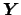 be a column vector of length where each element 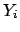 is a random variable representing the number of successes of for population . Let the column vector 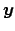 contain elements 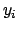 representing the observed counts of the number of successes for each population. Let 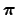 be a column vector also of length with elements 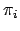 = 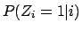, i.e., the probability of success for any given observation in the 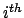 population.
The linear component of the model contains the design matrix and the vector of parameters to be estimated. The design matrix of independent variables,
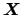, is composed of rows and 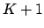 columns, where 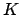 is the number of independent variables specified in the model. For each row of the design matrix, the first element
 . This is the intercept or the ``alpha.'' The parameter vector,
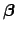, is a column vector of length . There is one parameter corresponding to each of the columns of independent variable settings in
, plus one, 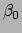, for the intercept.
. This is the intercept or the ``alpha.'' The parameter vector,
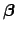, is a column vector of length . There is one parameter corresponding to each of the columns of independent variable settings in
, plus one, 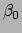, for the intercept.
The logistic regression model equates the logit transform, the log-odds of the probability of a success, to the linear component: